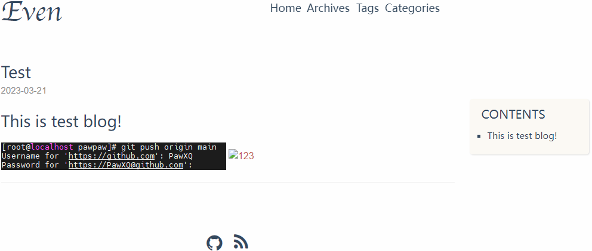
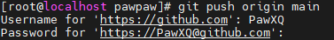
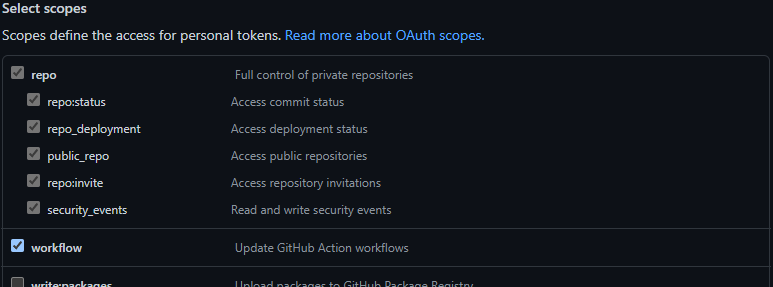
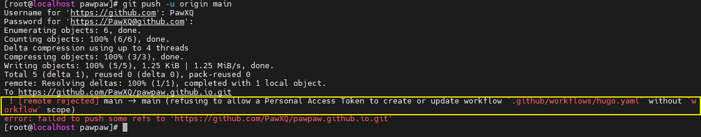
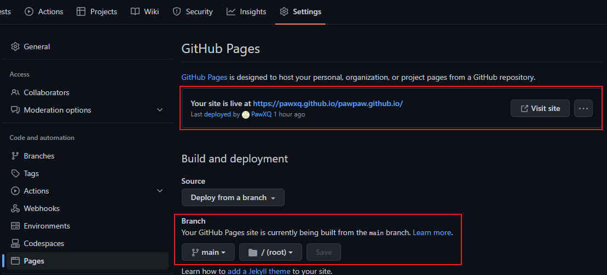

Hugo-0.108.0
原本我是用 0.111.3 不過 hugo-theme-even 一直裝不起來，所以換0.108.0(中風)
以下紀錄 Hugo 建立，並託管到 Github 的過程(和0.111.3差不多)
Hugo-doc-Install on Linux
Hugo 有兩種版本，可以選擇安裝 standard 或 extended 。官方建議 extended 版本。
差異在於 extended (有看沒有懂裝就對了)
- 可以 Encode WebP images (兩個版都可以 decode)
- Transpile Sass to CSS using the embedded LibSass transpiler
Pre-require
安裝 git 和 go
這邊使用 centos 8 stream 安裝
1
2
3
4
5
6
7
8
9
10
11
12
|
# git
yum update -y
yum install -y git-all
# go
wget https://go.dev/dl/go1.20.2.linux-amd64.tar.gz
rm -rf /usr/local/go && tar -C /usr/local -xzf go1.20.2.linux-amd64.tar.gz
# 放入環境變數
vim /etc/profile
export PATH=$PATH:/usr/local/go/bin
source /etc/profile
go version
|
使用 Prebuilt binaries
下載 0.108.0 版，解壓縮就可用
抓取對應的 binaries，(hugo_extended_0.108.0_linux-amd64.tar.gz)
1
2
3
4
5
6
7
8
9
10
|
# 下載、解壓縮
mkdir hugo && cd hugo
wget https://github.com/gohugoio/hugo/releases/download/v0.108.0/hugo_extended_0.108.0_linux-amd64.tar.gz
tar -xzvf hugo_extended_0.108.0_linux-amd64.tar.gz
# 放入環境變數
vim /etc/profile.d/hugo.sh
export PATH=$PATH:/root/hugo
source /etc/profile.d/hugo.sh
hugo version
|
hugo completion bash
hugo completion bash
1
2
3
4
5
6
|
yum install -y bash-completion
source <(hugo completion bash)
hugo completion bash > /etc/bash_completion.d/hugo
# You will need to start a new shell for this setup to take effect.
hugo completion bash
|
創建 blog
1
2
3
4
5
|
# 這一步驟沒有也沒差分類用
mkdir website && cd website
# 創建目錄結構 hugo new site <project_name> # <project_name> 開心就好
hugo new site pawpaw && cd pawpaw
|
添加版面
olOwOlo/hugo-theme-even
1
2
3
4
5
6
7
8
|
# 下載主題到blog下的themes目錄，在blog所在目錄執行如下命令
git clone https://github.com/olOwOlo/hugo-theme-even themes/even
# 使用even主題自帶的全局配置config.toml覆蓋Hugo初始安裝的config.toml
cp themes/even/exampleSite/config.toml ./
# 使用even主題自帶的博客文章默認配置themes/even/archetypes/default.md覆蓋Hugo初始安裝的archetypes/default.md，在blog根目錄執行如下命令
cp themes/even/archetypes/default.md ./archetypes/
|
1
2
3
4
5
6
7
8
9
10
11
12
|
# 修改 config.toml 的配置項
baseURL = "https://pawxq.github.io/pawpaw.github.io/"
# 最底下新增
[params.post_images]
src_dir = "post"
dst_dir = "post"
dst_path_prefix = "/post"
# 修改archetypes/default.md裡的默認配置項，把toc都設置為true，開啟文章自動生成目錄功能。
vim ./archetypes/default.md
toc: true
|
建立文章
1
2
3
4
5
6
7
|
# 我這樣建立的目的是為了 hugo 生成網頁時，能自動將每一篇的[文章]和[圖片]放在同一名稱的資料夾，方便查閱分類
# 建立放[圖片]的 directory
mkdir content/post/test
# 生成[文章]
hugo new post/test.md
|
1
2
3
4
5
6
7
8
9
|
---
就是 ./archetypes/default.md 的內容
---
# This is test blog!
<!--這邊 userpwd.png 在 content/post/test 底下，使用圖片方式舊如下直接使用不用使用相對路徑用了反而不行-->
<!--上傳github 也不會有問題-->


|
▲ draft: false 是代表此文章是否還是草稿狀態，如果是 true hugo 生成網頁時就不會出現在 public 。

運行測試
1
2
3
4
|
# -D 啟動草稿模式
# --bind 沒有的話，只能限定本機訪問
# --baseURL 設定網站根目錄對應的URL
hugo server -D --bind 192.168.80.231 --baseURL http://192.168.80.231
|
生成靜態文件
1
2
|
# 生成後在 public 可以看到生成檔案
hugo
|
託管到 github
1
2
3
4
5
6
7
8
9
10
11
12
13
14
15
16
17
18
19
20
21
22
23
|
# 切換到 public 目錄
cd public
# 初始化，創建 Git 倉庫
git init
# 顯示當前Git倉庫的文件狀態，包含[已修改、已暫存、未跟蹤]的文件
git status
# 將未跟蹤、已修改的文件添加到 Git 倉庫暫存區
git add .
# 將已在暫存區的文件添加到Git倉庫中
# -m 表示此提交的說明
git commit -m "1st submit"
# 將當前分之名稱改為 "main"，Git 2.28.0 之後 "master" 已棄用
git branch -M main
# 將本地Git倉庫與遠程Git倉庫進行關聯。 "origin"是遠程Git倉庫的名稱
# 後面是 Git 倉庫 URL 地址
git remote add origin https://github.com/PawXQ/pawpaw.github.io.git
# 將本地分支"main"上的更改推送到遠程分支"main"中
# -u 將本地分支與遠程分支關聯起來。如果此前沒有進行過推送，則此命令將創建遠程分支並將本地分支與其關聯。
git push -u origin main
# 底下是未來懶人更新用
cd .. && hugo && cd public
git status && git add . && git commit -m "submit" && git push -u origin main
|
推送過程需要 Username 和 Password

Password 創建(這裡的密碼不是指登入網站的密碼) (創建好之後請存好 要不然不見就找不會來了)(再創一個就好了怕啥)
https://github.com/settings/tokens/new (請先登入)

▲ 設定權限 workflow 也要勾選，要不然在下一步 github actions 要上傳 workflow 會被拒絕。

▲ 好啦~這下被拒絕了吧
github 託管網頁設定
https://github.com/PawXQ/pawpaw.github.io/settings/pages
因為我是自己上傳 public，所以這邊沒有使用自動生成功能

參考文章
Hugo + even + GitHub Pages+ Utterances搭建个人博客